釣行日誌 ＮＺ編
NZ 2019-2020釣行 Vol - 3 He-dayさん 特別寄稿
Day 5
フィッシング･トリップ５日目の天気予報は曇り。１時間ちょっとのドライヴで、スプリング・クリークへ出かけました。以前はシーラン・ブラウン・トラウトも遡上していて、 Martin が言うところの “double digit”（２桁）、つまりオーヴァー10lbの実績もある川です。最近はそれほどの大物は見られない代わりに、あまり長い距離を歩かなくてもある程度の数が期待でき、リラックスして楽しめる状況だということでした。
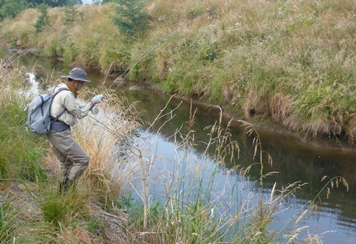
流れの規模が小さいため、リーダーの全長は 9ft。リーダーの先端に#14インディケーター・ドライ・フライ、2ftほどのドロッパー・ティペットには #14ケースド・カディスを結びます。パーキング・スペースから川沿いのダート・ロードを下流へ向かってしばらく歩き、午前７時過ぎから、背の高い草が茂ったバンクの遡行を始めました。
間もなく、流れの緩やかなプールで、ゆっくりとクルージングする大きな鱒を Martin が見つけました。数m先の鱒の鼻先へそっとフライをプレゼンテーションします。２、３投目に鱒の白い口が開くのが見え、インディケーター・ドライ・フライが小さく揺れたように感じました。素早くロッドを立てると、確かな手応えが伝わってきます。鱒が身をくねらせて走り始めると、そのままではフライ・ラインが足元の草や灌木に絡んで、やり取りは困難な状況です。He-Day は慌ててバンクを下流方向へ移動し、足場のよい場所を探して流れの中へ入りました。
鱒は草の根や流木が絡み合ったバンクの際へ潜り込もうとして、反転と突進を繰り返します。ロッドを右に倒したり、左に倒したり、力づくでリールを巻いたり…。ようやく鱒が疲れを見せたところで、傍らまでやって来ていた Martin がネットに収めてくれました。
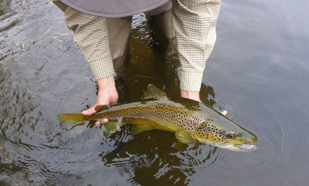
63cm、雄のブラウン・トラウト。頭から背にかけては、このスプリング・クリークの鱒特有の暗緑色に染まっています。頬はほのかにメタリック・ブルーに輝き、腹部に散在する朱点が彩りを添えていました。
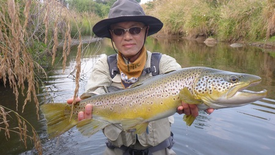
腹部には朱点が散在していた
それから30分ほど鱒を探しながらバンクを遡行しているうちに、このスプリング・クリークではいちばん大きなプールヘやって来ました。３人で目を皿のようにして探してみましたが、残念ながら鱒の姿は見えません。ブラインド・フィッシングを試みることにして、Me-YouとHe-Dayはバンクの草地を滑り降りるようにして流れの中に入りました。
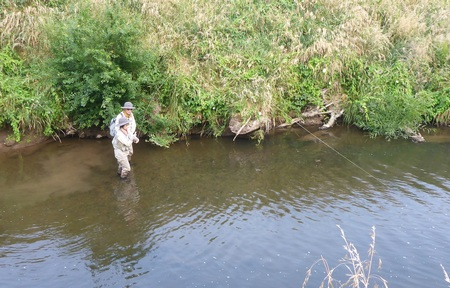
バンクの上から観察を続ける Martin の助言を受けながら、10数m上流の流れ込みを狙います。ほどなくインディケーター・ドライ・フライが勢いよく沈み、Me-Youの5wtロッドがきれいな弧を描きました。
鱒はプールの中を元気よく縦横に駆け回りますが、それほど大きくはないようです。 Martin が “He-Day!” と声をかけて、バンクの上からランディング・ネットを投げてくれました。ところが、 Martin のランディング・ネットのフレームは金属製。He-Day が手を伸ばす前に、水深約80cmの水底へ沈んでしまいました。
He-Day 自身の動きで泥が舞い上がって濁った水中を透かし見ながら、しばしの悪戦苦闘。何とか爪先にランディング・ネットのフレームを引っかけて拾い上げ、Me-You の鱒をネットに収めることができました。
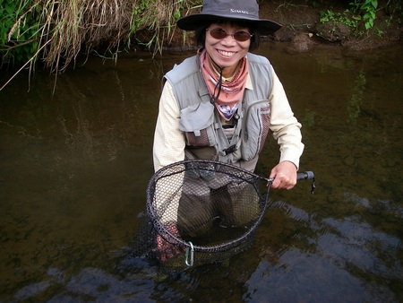
#14ケースド・カディスを捕らえたのは、50cm、健康的な体型のブラウン・トラウト。可愛らしい目元と、メタリック・パープルに縁取られた暗褐色の大きな斑紋が印象的でした。
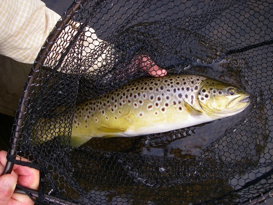
縁取られた暗褐色の大きな斑紋
その後は２時間ほど、釣りが難しい時間が続きました。何匹かの鱒の姿は見つけたのですが、ブッシュに囲まれた狭い空間でのキャスティングを強いられたり、数種類のメイフライ・パターンやカディス・パターンのドライ・フライをことごとく見切られたり…。
川岸の草地には、所々でキツネノテブクロ(foxglove)が花を咲かせていました。花を正面から見ると、釣鐘が大きく口を開けて話しかけているように感じられて、緊張していた気持ちが和んできます。
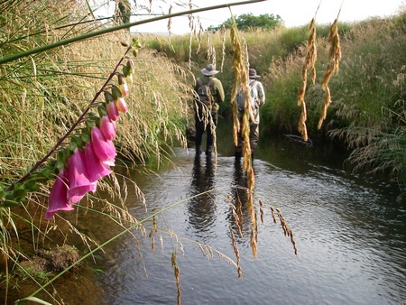
川岸に、ヤナギの木が目立つようになってきました。流れの緩やかな小さなプールで Martin が見つけた鱒は、張り出したヤナギの大枝の下をゆっくりとクルージングしています。ヤナギの葉に寄生する “willow grub” を捕食しているのだろうと予想し、#16ウィロウ・グラブ・パターンをドロッパー・ティペットに結んで、Me-You がキャスティングを開始しました。鱒との距離は７m ほど。Me-You が鱒のクルージング・コースにフライを置いて待ちますが、鱒は反応せず、素通りしてしまいます。
それならばと Martin が取り出したのは、#14スネイル・パターン。鱒にとって、水底の巻貝もフィーディングの対象として重要だということです。
Martin の言葉を裏付けるように、スネイル・パターンの１投目で、インディケーター・ドライ・フライがゆっくりと沈みました。
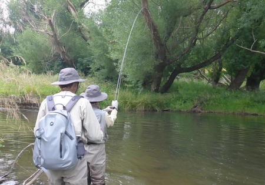
鱒はプールの底に沈んだ流木に向かって突進し、Me-You のロッドが大きく曲がります。鱒の突進に負けないように、Me-You はリールのドラグを少し締め込み、グリップを両手で握ってロッドをしっかりと支えました。
数分の後に Martin のネットに収まったのは、59cm、雄のブラウン・トラウト。ダーク・ゴールドの体側に、うっすらと紫色をにじませた一条の輝く帯が走っていました。
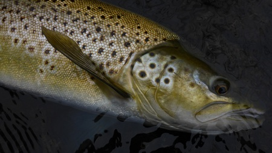
そのおよそ30分後、河畔林に囲まれたエリアで、先行する Martin がまた鱒を見つけました。今回も小さなプールで、張り出したヤナギの大枝の下でクルージングしています。ドロッパー・ティペットに #16ウィロウ・グラブ・パターンを結んで、He-Day が流れに降り立ちました。 Martin の合図を見ながら、慎重に接近します。
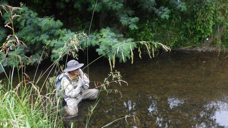
片膝をついてキャスティング
５mほどフライ・ラインを引き出し、水面近くまで垂れ下がったヤナギの枝の下にフライを送り込むために、片膝をついてキャスティングを開始。１投目でフライがうまく奥の方に入ると、鱒はゆっくりと水面下でウィロウ・グラブ・パターンを捕らえる素振りを見せました。インディケーター・ドライ・フライが沈むのを視界にとらえながら、しっかりとロッドを立てて合わせます。
ヤナギの枝や岸辺から張り出した草にフライ・ラインやリーダーが擦れないように、ロッドを立てたり寝かせたりしながら、He-Day は少々強引な勝負に出ました。リールのドラグ・テンションを強めにして、一気に鱒を引き寄せます。
背びれから尾びれにかけての体側に鮮やかな朱点を散らした、55cm、雄のブラウン・トラウト。まぶしく輝く魚体のずっしりとした重さに、気持ちはすっかり満たされていました。
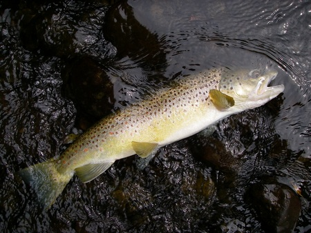
気持ちはすっかり満たされて
大枝が張り出したプールの暗い木陰へ戻っていく鱒を見送ったのは、まだ昼前。けれども、充実した時間に感謝し、“early finish” を選択することにしました。
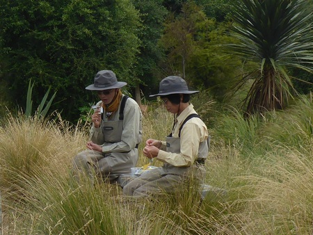
川辺でゆっくりとランチ・タイムを楽しんだ後、穏やかな気分で帰途に就きました。
Day 6
フィッシング･トリップ６日目。とうとう釣りの最終日を迎えました。午前3時30分に起床して朝食や準備を済ませ、5時30分にモーテルを出発します。やや不安定な天候になるという予報でしたが、 Martin に尋ねてみると、降っても通り雨程度だろうという話でした。この日は、少し遠くの川へ出かけます。その川はこれまでずっと水位が高く、釣りが難しい状況でしたが、ようやく落ち着いてきたということでした。
ところが、1時間15分ほどのドライヴで川へ到着してみると、水位は落ち着いているものの、まだかなりの濁りが残っています。そこで、本流での釣りは諦め、上流域の支流を目指すことになりました。山地へ向かって、さらに15分ほどのドライヴ。林の中に開けたパーキング・スペースからは、豊かな森林に覆われたなだらかな山並みが眺望できました。真っ青に澄み渡った空と明るい日差しを目にすると、気持ちが高揚してきます。
遡行を始めてから、１時間以上が経過しました。水温 10.8 ℃ の流れは澄み切っていて、水底の石の様子までよく見えるのですが、まだ Martin から「魚を見つけた」という合図はありません。事前に Martin から聞かされていた通り、この川に棲む鱒の数はあまり多くないようです。
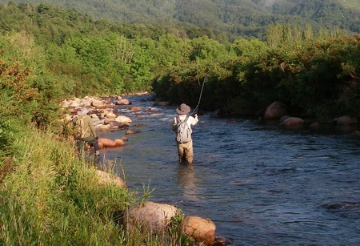
それから15分ほどが経過した頃、日陰に入った川原を先行する Martin から、ようやく「止まれ」という合図がありました。流れから離れ、遠回りをして Martin が立っている場所まで移動します。 Martin が指差すプールの開きを注視すると、かなり速い流れの中層に定位している鱒の姿が見えました。He-Day は一度少し下流へ下り、そっと流れに入って鱒との距離を詰めていきます。
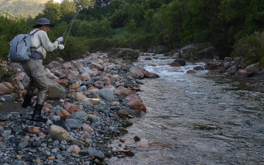
バット・セクションから大きく曲がった
He-Day は、鱒の 10m ほど下流でリールからフライ・ラインを引き出し、キャスティングを開始しました。インディケーター・ドライ・フライは、数回フィーディング・レーンを流れましたが、鱒は全く反応を見せません。 Martin の
「ニンフが軽すぎて、鱒の泳層まで届いていないようだ」
という助言で、タングステン・ウェイトをソラックスに巻きこんだへヴィ・ウェイトの #12メイフライ・ニンフに交換して、１投目。インディケーター・ドライ・フライがすっと沈みました。速い流れにストリッピングが追いつかず、合わせが少し遅れましたが、何とかフック・ポイントは鱒の顎を捉えることができたようです。鱒の体重と速い流れの抵抗を受けて、6wt ロッドはバット・セクションから大きく曲がりました。
上流へ向かって走る鱒を追いかけて、He-Day もロッドを高く掲げて川原を走ります。流心に入ってしばらく力勝負を繰り広げた後、鱒は流れに乗って下流へ下りました。6wt ロッドのバット・パワーで何とか流心から引っ張り出し、流れの弱い岸近くの浅場まで引き寄せたところで、 Martin が慎重に鱒をネットに収めてくれました。
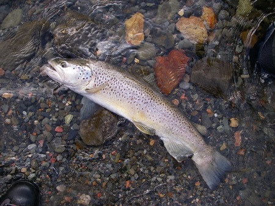
その瞬間、張りつめていた緊張の糸が切れ、安堵と歓喜が入り交じった３人の声が辺りに響きました。頬をメタリック・ブルーに染めた、65cm、7.5lb の雄。澄み切った流れにふさわしく、全身が明るい銀色に輝いていました。
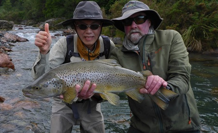
いつの間にか、空はすっかり雲に覆われていました。それ以降、流れの中に鱒の姿は見えません。
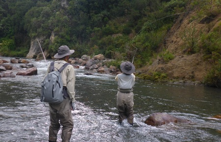
期待を抱かせる大きなプールと出会うたびに、慎重に、そして丁寧にキャスティングを繰り返しましたが、Me-You にも He-Day にも、鱒からのコンタクトはありませんでした。
とうとう、折り返し地点まで来てしまいました。最後のプールにも鱒の姿がないことを確認した後、入渓地点へ向かって引き返します。川原や流れの底には滑り易い大きな丸石が多く、いつ転倒してもおかしくないような状況です。川を下るのに随分気を遣ったおかげで、パーキング・スペース近くまで戻ってきた時には、かなりの疲れを感じていました。
上流を振り返ると、６日間のフィッシング・トリップで出会った数々の鱒や景色が思い出されます。He-Day と Me-You は、NZの流れに深い感謝の気持ちを抱きながら、午前11時30分に川を後にしました。
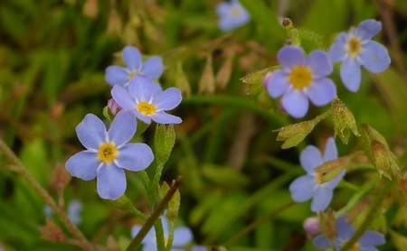
帰路のドライヴの途中、 Martin は
「ティームとしては、６日間、“no skunk” だった。我々は素晴らしいティームだ」
と感慨深げに語りかけてきました。４日目には Me-You の１匹が、そして最終日の６日目には He-Day の１匹が、私たちを “skunk” (no fish) から救ってくれました。個人としては He-Day にも Me-You にも “skunk” の日はありましたが、ティームとしては確かに “no skunk” だったのです。
He-Day は Martin の言葉に深くうなずき、
「私もそう思う。我々はティーム “no skunk” だ」
と答えました。そして、He-Day や Me-You をティーム・メイトと考える Martin の気持ちの温かさに心地よく包まれて、別れの時を迎えました。
翌日は、ガイドに出かけた Martin に代わって、Adeleがクライストチャーチ空港へ送ってくれます。午前10時から、名残惜しい気持ちを強く感じながら、今回の旅で最後のドライヴ。He-DayとMe-Youは、
「また、会いましょう」
という Adele に再訪を約束して、空港のドロップ・オフ・エリアを出発ロビーに向かって歩き始めました。
あとがき
三部構成の長文となった釣行記を最後までお読みいただき、本当にありがとうございました。今回は第一部“Breakable!” でいきなりクライマックスを迎え、その後、後日譚の第二部 “Scenic trip” と第三部 “No skunk” が長々と続くという構成になってしまいました。お読みくださったみなさんに、多少なりともご参考になる点があればうれしく思います。
2020年7月現在、今後のNZ釣行は見通しが立たない状況ですが、１日も早くNZで大きな鱒と対峙できる日が来ることを心より願っています。
釣行日誌ＮＺ編 目次へ
サイトマップ
ホームへ
お問い合わせ